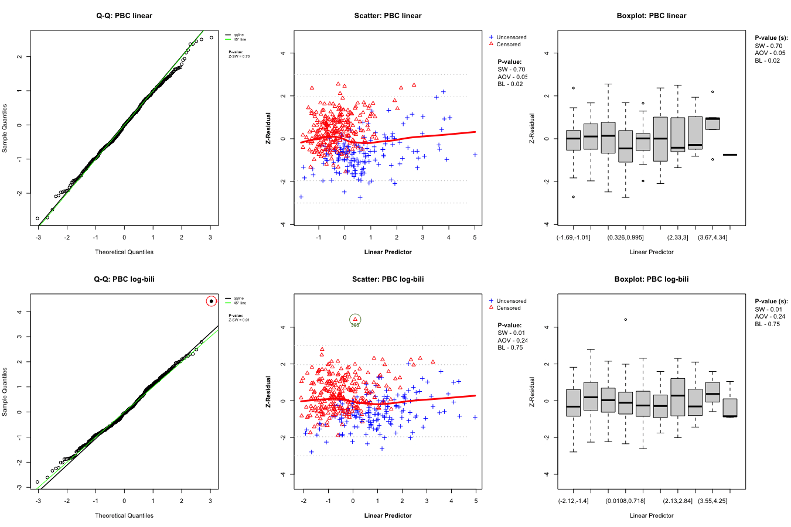
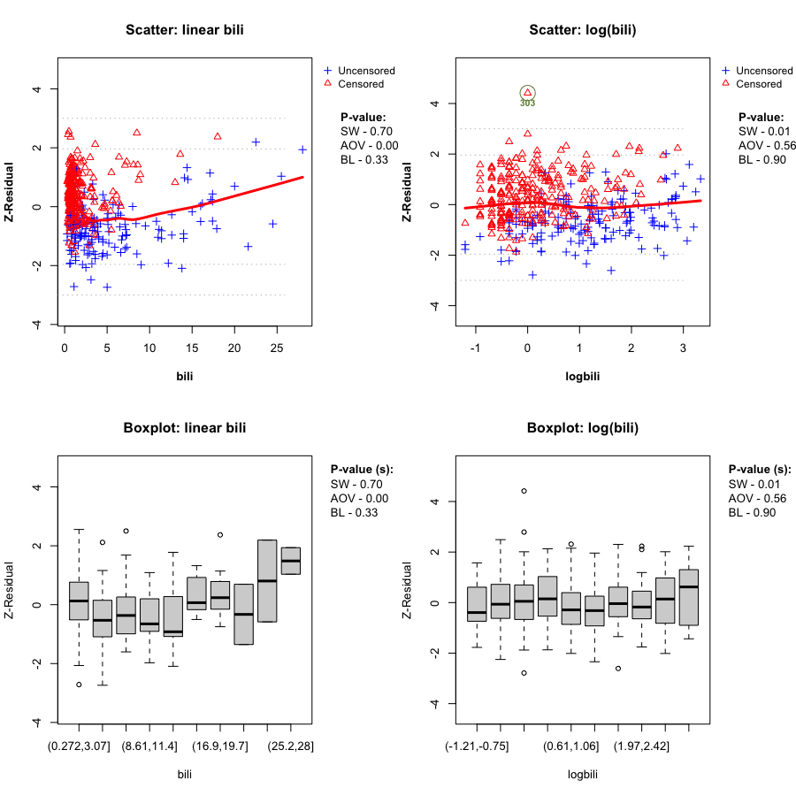
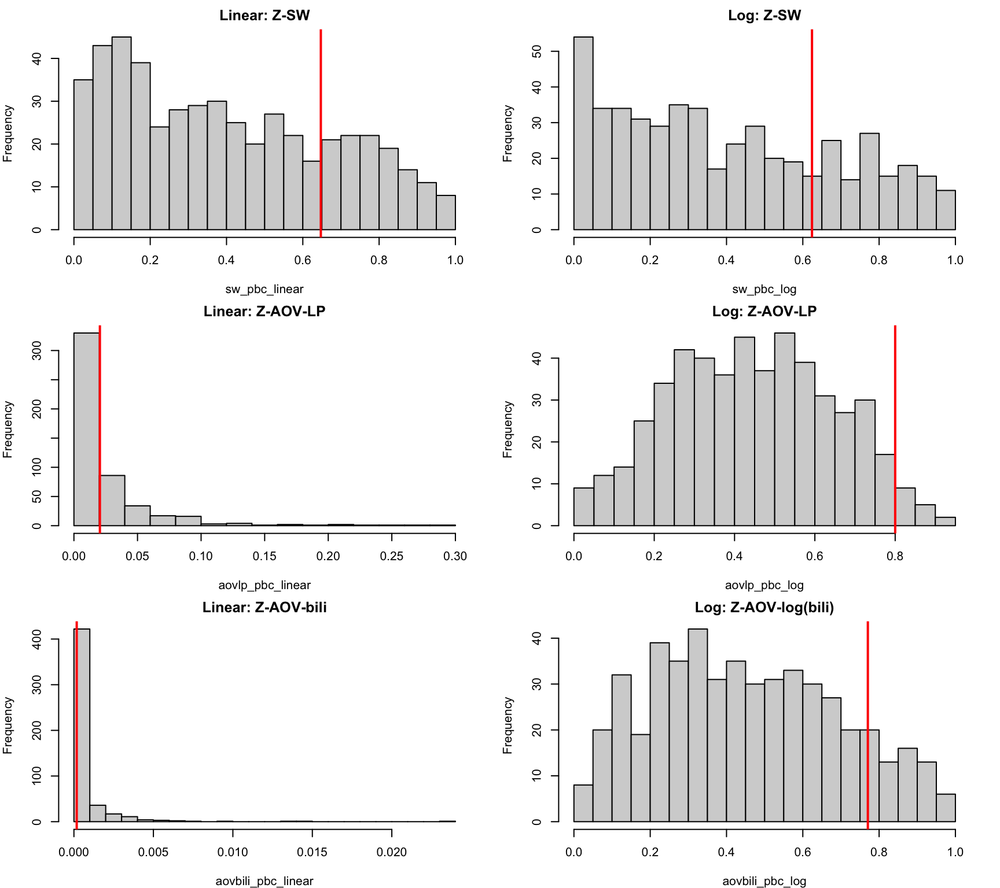
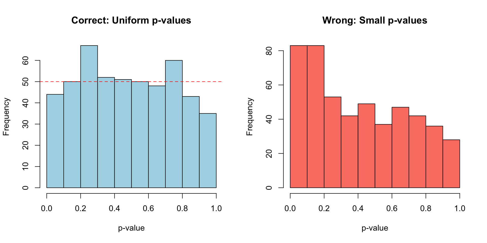

Code
if (!requireNamespace("Zresidual", quietly = TRUE)) {
if (!requireNamespace("remotes", quietly = TRUE)) install.packages("remotes")
remotes::install_github("tiw150/Zresidual", upgrade = "never", dependencies = TRUE)
}Checking Functional Forms and Proportional Hazards Assumptions
Source:vignettes/articles/demo_coxph_nphnl.qmd
Install Zresidual
if (!requireNamespace("Zresidual", quietly = TRUE)) {
if (!requireNamespace("remotes", quietly = TRUE)) install.packages("remotes")
remotes::install_github("tiw150/Zresidual", upgrade = "never", dependencies = TRUE)
}Loading Required Packages
library(Zresidual)
pkgs <- c(
"survival", "EnvStats", "dplyr", "tibble", "gt", "gifski","MASS"
)
missing_pkgs <- pkgs[!vapply(pkgs, requireNamespace, logical(1), quietly = TRUE)]
if (length(missing_pkgs)) {
install.packages(missing_pkgs, dependencies = TRUE)
}
invisible(lapply(pkgs, function(p) {
suppressPackageStartupMessages(library(p, character.only = TRUE))
}))Additional Helper Functions
# Lightweight cumulative martingale comparator used in the original analysis script.
lwy_cum_martingale <- function(fit, x, B = 1000, seed = 1) {
r <- residuals(fit, type = "martingale")
ok <- is.finite(r) & is.finite(x)
r <- r[ok]
x <- x[ok]
ord <- order(x)
x_ord <- x[ord]
r_ord <- r[ord]
n <- length(r_ord)
cum_obs <- cumsum(r_ord) / sqrt(n)
stat_obs <- max(abs(cum_obs))
set.seed(seed)
boot_mat <- matrix(NA_real_, nrow = B, ncol = n)
boot_stat <- numeric(B)
for (b in seq_len(B)) {
w <- stats::rnorm(n)
cum_b <- cumsum(r_ord * w) / sqrt(n)
boot_mat[b, ] <- cum_b
boot_stat[b] <- max(abs(cum_b))
}
list(
x = x_ord,
cum = cum_obs,
low = apply(boot_mat, 2, stats::quantile, probs = 0.025, na.rm = TRUE),
high = apply(boot_mat, 2, stats::quantile, probs = 0.975, na.rm = TRUE),
p = mean(boot_stat >= stat_obs)
)
}This vignette demonstrates how to use the Zresidual package to reproduce the core workflow of the Cox proportional hazards paper:
The practical interpretation is:
We use the Mayo Clinic PBC data from the survival package. Following the paper, transplantation is treated as right censoring for the cause-specific hazard of death.
pbc2 <- survival::pbc
pbc2$event <- as.integer(pbc2$status == 2)
pbc2$edema <- as.factor(pbc2$edema)
pbc2$logbili <- log(pbc2$bili)
vars_needed <- c("time", "event", "age", "edema", "bili", "logbili", "albumin")
pbc2 <- pbc2[complete.cases(pbc2[, vars_needed]), ]
pbc_combined_path <- file.path(resources_path, "pbc_combined_anim.gif")
if (force_rerun || !file.exists(pbc_combined_path)) {
gifski::save_gif(
expr = {
for (i in 1:10) {
# Set up a 2x3 grid: 2 rows (models), 3 columns (plot types)
par(mfrow = c(2, 3), mar = c(4, 4, 3, 2))
# Row 1: Linear Bilirubin Model
qqnorm(Z_pbc_linear, irep = i, main = "Q-Q: PBC linear")
plot(Z_pbc_linear, info = zcov_pbc_linear, x_axis_var = "lp", irep = i, add_lowess = TRUE,
main.title = "Scatter: PBC linear")
boxplot(Z_pbc_linear, info = zcov_pbc_linear, x_axis_var = "lp", irep = i,
main.title = "Boxplot: PBC linear")
# Row 2: Log-Bilirubin Model
qqnorm(Z_pbc_log, irep = i, main = "Q-Q: PBC log-bili")
plot(Z_pbc_log, info = zcov_pbc_log, x_axis_var = "lp", irep = i, add_lowess = TRUE,
main.title = "Scatter: PBC log-bili")
boxplot(Z_pbc_log, info = zcov_pbc_log, x_axis_var = "lp", irep = i,
main.title = "Boxplot: PBC log-bili")
}
},
gif_file = pbc_combined_path,
width = 1350,
height = 900,
delay = 1,
res = 96
)
}
knitr::include_graphics(pbc_combined_path)
pbc_bili_path <- file.path(resources_path, "pbc_bili_anim.gif")
if (force_rerun || !file.exists(pbc_bili_path)) {
gifski::save_gif(
expr = {
for (i in 1:10) {
par(mfrow = c(2, 2), mar = c(4, 4, 2, 2))
plot(Z_pbc_linear,info = zcov_pbc_linear, x_axis_var = "bili", irep = i, add_lowess = TRUE,
main.title = "Scatter: linear bili")
plot(Z_pbc_log,info = zcov_pbc_log, x_axis_var = "logbili", irep = i, add_lowess = TRUE,
main.title = "Scatter: log(bili)")
boxplot(Z_pbc_linear, info = zcov_pbc_linear, x_axis_var = "bili", irep = i,
main.title = "Boxplot: linear bili")
boxplot(Z_pbc_log, info = zcov_pbc_log, x_axis_var = "logbili", irep = i,
main.title = "Boxplot: log(bili)")
}
},
gif_file = pbc_bili_path,
width = 900,
height = 900,
delay = 1,
res = 96
)
}
knitr::include_graphics(pbc_bili_path)
Histograms of Replicated P-values
par(mfrow = c(3, 2), mar = c(4, 4, 2, 2))
hist(sw_pbc_linear, main = "Linear: Z-SW", breaks = 20)
abline(v = upper_bound_pvalue(sw_pbc_linear), col = "red", lwd = 2)
hist(sw_pbc_log, main = "Log: Z-SW", breaks = 20)
abline(v = upper_bound_pvalue(sw_pbc_log), col = "red", lwd = 2)
hist(aovlp_pbc_linear, main = "Linear: Z-AOV-LP", breaks = 20)
abline(v = upper_bound_pvalue(aovlp_pbc_linear), col = "red", lwd = 2)
hist(aovlp_pbc_log, main = "Log: Z-AOV-LP", breaks = 20)
abline(v = upper_bound_pvalue(aovlp_pbc_log), col = "red", lwd = 2)
hist(aovbili_pbc_linear, main = "Linear: Z-AOV-bili", breaks = 20)
abline(v = upper_bound_pvalue(aovbili_pbc_linear), col = "red", lwd = 2)
hist(aovbili_pbc_log, main = "Log: Z-AOV-log(bili)", breaks = 20)
abline(v = upper_bound_pvalue(aovbili_pbc_log), col = "red", lwd = 2)
Summary of Replicated P-values
pbc_summary <- tibble::tibble(
Model = c("Linear bili", "Log(bili)"),
AIC = c(AIC(fit_pbc_linear), AIC(fit_pbc_log)),
`Score global` = c(score_pbc_linear$table["GLOBAL", "p"], score_pbc_log$table["GLOBAL", "p"]),
`Score bili` = c(score_pbc_linear$table["bili", "p"], score_pbc_log$table["logbili", "p"]),
`LWY-like bili` = c(lwy_pbc_linear$p, lwy_pbc_log$p),
`Z-SW` = c(upper_bound_pvalue(sw_pbc_linear), upper_bound_pvalue(sw_pbc_log)),
`Z-AOV-LP` = c(upper_bound_pvalue(aovlp_pbc_linear), upper_bound_pvalue(aovlp_pbc_log)),
`Z-AOV-bili` = c(upper_bound_pvalue(aovbili_pbc_linear), upper_bound_pvalue(aovbili_pbc_log))
)
pbc_summary %>%
gt::gt() %>%
gt::fmt_number(columns = -Model, decimals = 3) %>%
gt::tab_header(title = "PBC model comparison")| PBC model comparison | |||||||
| Model | AIC | Score global | Score bili | LWY-like bili | Z-SW | Z-AOV-LP | Z-AOV-bili |
|---|---|---|---|---|---|---|---|
| Linear bili | 1,579.754 | 0.095 | 0.014 | 0.008 | 0.647 | 0.020 | 0.000 |
| Log(bili) | 1,531.139 | 0.567 | 0.515 | 0.737 | 0.624 | 0.800 | 0.770 |
Data Generation:
In this setting, the data are generated under a proportional-hazards model with a log(x2) effect, but we first fit a misspecified model using raw x2.
# Functions for Simulating Datasets
rexp2 <- function(n, rate){ if (rate==0) rep(Inf,n) else rexp(n = n, rate = rate)}
## Genearting Non-linear Cox PH Data
sim_nonlinear_coxph <- function(
sample_size = 500,
lambda = 0.007,
alpha = 3,
mean.censor = 7.5,
beta_a=-2,
beta_b=-2,
beta1 = -0.5,
corr = 0,
t0=pi/2,
seed = 1
) {
set.seed(seed)
n <- sample_size
Sigma <- matrix(c(2, corr, corr, 2), 2, 2)
X <- MASS::mvrnorm(n = n, mu = c(0, 0), Sigma = Sigma)
x1 <- round(X[, 1], 1)
x2 <- pmax(abs(round(X[, 2], 1)), 0.01)
logx2 <- log(x2)
v <- runif(n)
a<- -log(v)
b<- lambda*exp(x1*beta1+beta_a*log(x2)) * (t0^alpha)
surv_time<-rep(0,n)
group1<-which(a<b)
group2<-which(a>=b)
surv_time[group1]<- (-log(v)[group1]/
(lambda*exp(x1[group1]*beta1+log(x2)[group1]*beta_a)))^(1 /alpha)
surv_time[group2]<- ((-log(v)[group2]-
((t0^alpha)*lambda*
exp(x1[group2]*beta1+log(x2)[group2]*beta_a))+
((t0^alpha)*lambda*
exp(x1[group2]*beta1+log(x2)[group2]*beta_b)))
/(lambda*exp(x1[group2]*beta1)
*exp(log(x2)[group2]*beta_b)))^(1 /alpha)
# Censoring times
c0<- rexp2(n, rate= 1/mean.censor)
data.frame(
x1 = x1,
x2 = x2,
logx2 = logx2,
t = pmin(surv_time, c0),
d = as.integer(surv_time <= c0)
)
}
## Genearting Time Varying Cox PH Data
sim_timevarying_coxph <- function(
sample_size = 500,
lambda = 0.007,
alpha = 3,
mean.censor = 7.5,
beta1 = -2,
beta_a = 1.35,
beta_b = -1.35,
t0 = pi / 2,
corr = 0,
seed = 1
) {
set.seed(seed)
n <- sample_size
sigma<-rbind(c(2,corr),c(corr,2))
mu<-c(0,0)
covar<-MASS::mvrnorm(n=n, mu=mu, Sigma=sigma)
x1 = round(covar[,1],1)
x2 = round(covar[,2],1)
v <- runif(n)
a<- -log(v)
b<- lambda*exp(x1*beta1+beta_a*x2) * (t0^alpha)
surv_time<-rep(0,n)
group1<-which(a<b)
group2<-which(a>=b)
surv_time[group1]<- (-log(v)[group1]/
(lambda*exp(x1[group1]*beta1+x2[group1]*beta_a)))^(1 /alpha)
surv_time[group2]<- ((-log(v)[group2]-
((t0^alpha)*lambda*
exp(x1[group2]*beta1+x2[group2]*beta_a))+
((t0^alpha)*lambda*
exp(x1[group2]*beta1+x2[group2]*beta_b)))
/(lambda*exp(x1[group2]*beta1)
*exp(x2[group2]*beta_b)))^(1 /alpha)
# Censoring times
c0<- rexp2(n, rate= 1/mean.censor)
data.frame(
x1 = x1,
x2 = x2,
t = pmin(surv_time, c0),
d = as.integer(surv_time <= c0)
)
}
dat_nonlinear <- sim_nonlinear_coxph(seed = 101)
fit_linear <- coxph(Surv(t, d) ~ x1 + x2, data = dat_nonlinear)
fit_nonlinear <- coxph(Surv(t, d) ~ x1 + log(x2), data = dat_nonlinear)
score_linear <- cox.zph(fit_linear, transform = "identity")
score_nonlinear <- cox.zph(fit_nonlinear, transform = "identity")
Z_linear <- Zresidual(fit = fit_linear, data = dat_nonlinear, nrep = 200)Warning in log1p(-exp(diff_ab)): NaNs produced
Z_nonlinear <- Zresidual(fit = fit_nonlinear, data = dat_nonlinear, nrep = 200)Warning in log1p(-exp(diff_ab)): NaNs produced
par(mfrow = c(2, 3), mar = c(4, 4, 3, 3), cex = 1.1)
# Row 1: Misspecified Linear Fit
qqnorm(Z_linear, irep = 1, main = "Linear Model Q-Q Z-Residuals")
plot(Z_linear, info=zcov_linear, x_axis_var = "lp", irep = 1, add_lowess = TRUE,
main.title = "Linear Model Z-Residuals vs LP")
plot(Z_linear, info=zcov_linear, x_axis_var = "x2", irep = 1, add_lowess = TRUE,
main.title = "Linear Model Z-Residuals vs x2")
# Row 2: Correctly Specified Nonlinear Fit
qqnorm(Z_nonlinear, irep = 1, main = "Nonlinear Model Q-Q Z-Residuals")
plot(Z_nonlinear, info=zcov_nonlinear, x_axis_var = "lp", irep = 1, add_lowess = TRUE,
main.title = "Nonlinear Model Z-Residuals vs LP")
plot(Z_nonlinear, info=zcov_nonlinear, x_axis_var = "log(x2)", irep = 1, add_lowess = TRUE,
main.title = "Nonlinear Model Z-Residuals vs log(x2)")
sw_linear <- sw.test.zresid(Z_linear)
sw_nonlinear <- sw.test.zresid(Z_nonlinear)
aovlp_linear <- aov.test.zresid(Z_linear, X = "lp",zcov = zcov_linear, k.anova = 10)
aovlp_nonlinear <- aov.test.zresid(Z_nonlinear, X = "lp",zcov = zcov_nonlinear, k.anova = 10)
aovx_linear <- aov.test.zresid(Z_linear, X = "x2",zcov = zcov_linear, k.anova = 10)
aovx_nonlinear <- aov.test.zresid(Z_nonlinear, X = "log(x2)",zcov = zcov_nonlinear, k.anova = 10)
sim_linear_summary <- tibble::tibble(
Model = c("Linear Cox-PH", "Nonlinear Cox-PH"),
`Score global` = c(score_linear$table["GLOBAL", "p"], score_nonlinear$table["GLOBAL", "p"]),
`Score target covariate` = c(score_linear$table["x2", "p"], score_nonlinear$table["log(x2)", "p"]),
`Z-SW` = c(upper_bound_pvalue(sw_linear), upper_bound_pvalue(sw_nonlinear)),
`Z-AOV-LP` = c(upper_bound_pvalue(aovlp_linear), upper_bound_pvalue(aovlp_nonlinear)),
`Z-AOV-target` = c(upper_bound_pvalue(aovx_linear), upper_bound_pvalue(aovx_nonlinear))
)
sim_linear_summary %>%
gt::gt() %>%
gt::fmt_number(columns = -Model, decimals = 3) %>%
gt::tab_header(title = "Summary of Replicated P-values for the Nonlinear Dataset")| Summary of Replicated P-values for the Nonlinear Dataset | |||||
| Model | Score global | Score target covariate | Z-SW | Z-AOV-LP | Z-AOV-target |
|---|---|---|---|---|---|
| Linear Cox-PH | 0.000 | 0.000 | 0.477 | 0.001 | 0.000 |
| Nonlinear Cox-PH | 0.195 | 0.098 | 1.000 | 1.000 | 1.000 |
We perform a simulation loop across 500 datasets to compare the p-values produced by the Shapiro-Wilk diagnostic test for both the misspecified linear model and the correctly specified log-nonlinear model. We save these computation results to avoid repeating them in future renders unless force_rerun is enabled.
n_sim <- 500
sim_file <- file.path(resources_path, "sim_sw_pvalues.rds")
if (!force_rerun && file.exists(sim_file)) {
# Load pre-computed results
sim_res <- readRDS(sim_file)
p_c <- sim_res$p_c
p_w <- sim_res$p_w
} else {
# Execute the simulation loop
p_c <- numeric(n_sim)
p_w <- numeric(n_sim)
for(i in 1:n_sim) {
# Generate true non-linear data
dat_sim <- sim_nonlinear_coxph(seed = i)
# --- Case 1: Wrong Model (Linear) ---
fit_w_sim <- coxph(Surv(t, d) ~ x1 + x2, data = dat_sim)
z_w_sim <- Zresidual(fit_w_sim, data = dat_sim, nrep = 1)
p_w[i] <- as.numeric(sw.test.zresid(z_w_sim))
# --- Case 2: Correct Model (Nonlinear) ---
fit_c_sim <- coxph(Surv(t, d) ~ x1 + log(x2), data = dat_sim)
z_c_sim <- Zresidual(fit_c_sim, data = dat_sim, nrep = 1)
p_c[i] <- as.numeric(sw.test.zresid(z_c_sim))
}
# Save the results for future renders
saveRDS(list(p_c = p_c, p_w = p_w), sim_file)
}
Discussion: For the Correct Model (log-nonlinear), the distribution of p-values is relatively uniform, indicating a well-specified functional form that yields normally distributed Z-residuals. For the Wrong Model (linear), the vast majority of p-values are clustered near 0, demonstrating that the Shapiro-Wilk test reliably detects the non-normality caused by the misspecified functional form.